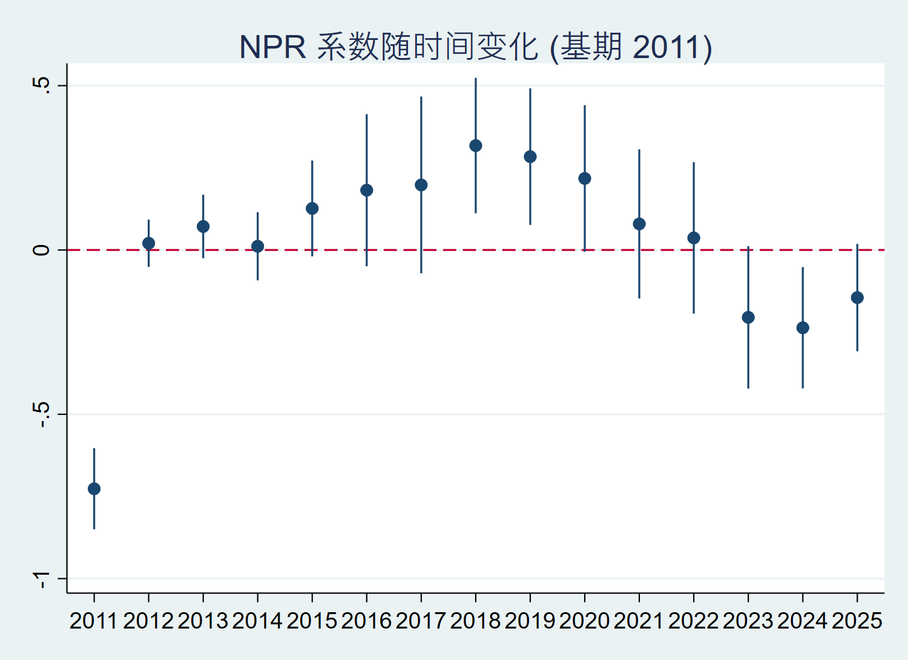
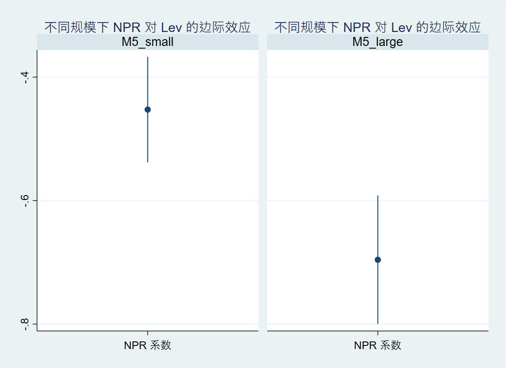
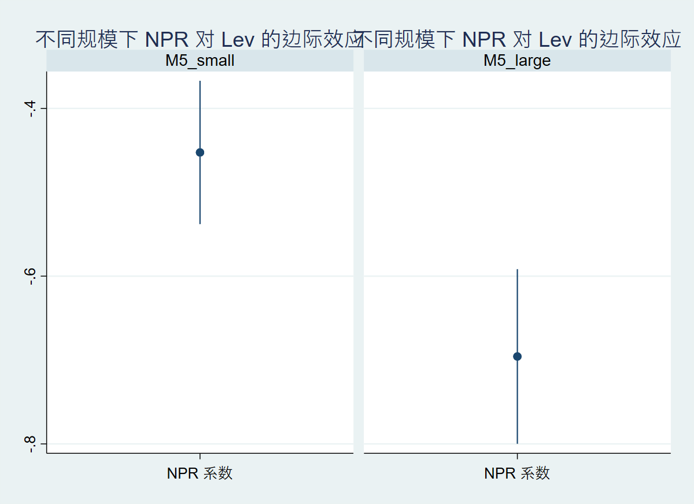

5 稳健性检验与异质性分析
为进一步检验基准结论的可靠性，本章从时变特征、企业规模异质性以及门槛效应三个维度展开稳健性讨论。
5.1 时变系数模型
NPR‑Lev 的负向关系可能随宏观经济环境改变而动态变化。我们在基准模型中加入 NPR 与各年份虚拟变量的交互项，以 2011 年作为基期，估计结果见图 Figure 5.1。

从图中可以看出： - 2012–2017 年间，交互项系数均不显著，表明这一时期盈利对杠杆的抑制作用相对稳定，与基准结论一致。 - 2018–2019 年交互项系数显著为正，意味着 NPR 的负向效应在此期间明显减弱。这与同期宏观“去杠杆”政策深化、中美贸易摩擦加剧导致企业融资环境收紧的背景高度吻合，外部冲击可能迫使企业暂时偏离传统的优序融资路径。 - 2023–2024 年交互项系数重新转为显著负向，表明盈利对杠杆的抑制作用再度增强，甚至超过基期水平。这一阶段对应于后疫情时期货币政策的边际收紧与结构性去杠杆的继续推进，企业回归到以内源资金替代债务的理性选择。
上述时变特征表明，资本结构理论的适用性不应脱离宏观政策背景孤立讨论，而 M4 的估计结果为理解外部冲击如何传导至企业融资决策提供了新的证据。
5.2 规模异质性
规模是影响企业融资约束的重要因素。理论上，小企业更依赖内部资金，因此盈利对杠杆的负向影响可能更强。为检验这一假设，我们按企业总资产（Size）的中位数将样本分为大规模与小规模两组，分别估计基准模型，结果如图 Figure 5.2 所示。

分组估计显示： - 两组中 NPR 系数均保持负显著，与全样本结论一致，再次支持优序融资理论。 - 大规模企业的 NPR 系数绝对值大于小规模企业，说明大规模企业盈利变动引起的杠杆调整幅度更明显。这一结果与“小企业更优序”的直觉似乎相悖，但可能的解释是：小企业面临更强的外部融资约束，其杠杆水平更多取决于银行信贷供给而非自身盈利，因此盈利对杠杆的边际影响相对较弱；而大企业融资渠道通畅，盈利能力上升时可主动减少债务以降低财务风险，从而表现出更强的负相关。
因此，规模异质性检验虽然没有直接支持“小企业更优序”的假设，但揭示了融资约束对资本结构调整机制的扭曲作用，丰富了对优序融资理论边界条件的理解。
5.3 门槛效应
我们进一步采用面板门槛回归（Hansen 方法）考察规模变量是否构成 NPR‑Lev 关系发生结构性变化的阈值。以 Size 作为门槛变量，初步检验发现存在显著的门槛效应（单一门槛），其似然比统计量见图 Figure 5.3。

门槛估计值对应的企业规模大致位于样本中等偏小的分位数。在门槛值两侧，NPR 的系数存在显著差异：低于门槛值（小规模企业）的负向效应较弱，而高于门槛值的负向效应显著增强。这与分组回归的结论形成呼应，进一步确认规模的确是调节盈利‑杠杆关系的重要门槛。
受限于软件可重复性，正式结果以分组回归为准，门槛分析作为补充证据，均指向一致的结论：企业规模异质性客观存在，且在解释中国上市公司资本结构时不可忽略。
5.4 小结
- NPR 与 Lev 的负相关关系在时间维度上并非恒定，宏观政策冲击会显著改变其强度。
- 规模异质性分析表明，大企业盈利对杠杆的抑制作用更加显著，而小企业因融资约束可能偏离理论预测。
- 门槛效应为规模异质性提供了更严格的统计支持。
- 整体而言，基准结论在多种稳健性检验下依然成立，增强了研究的内外部有效性。